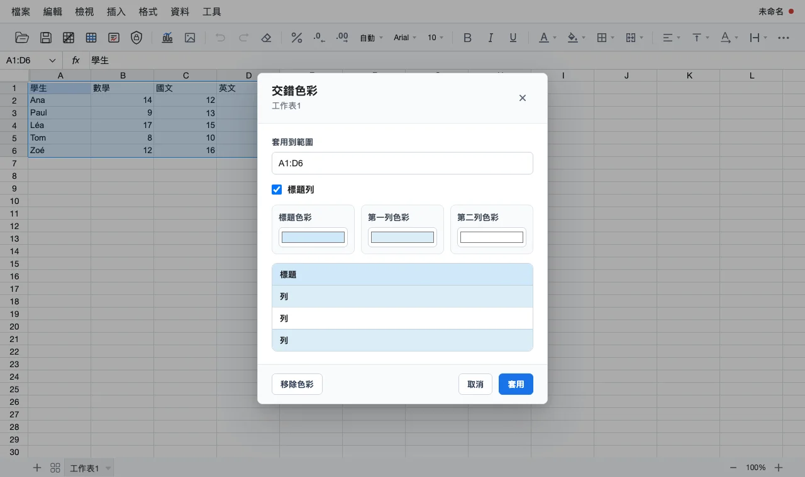

格式設定
文字
| 命令 | 位置 |
|---|---|
| 粗體、斜體、下劃線 | ；Ctrl B、Ctrl I、Ctrl U |
| 字型 | Arial 清單：十三種字型 |
| 字號 | 10 清單，或 格式 › 字型大小：9 到 72 |
| 文字色彩、填滿色彩 | |
| 清除格式 | 、格式 › 清除格式 |
在色彩面板中，重置顏色 移除色彩；自定義 開啟系統的色彩選擇器。
修改儲存格時，格式應用於所選的那部分文字。
對齊
| 命令 | 選項 |
|---|---|
| 水平 | 左、中、右 |
| 垂直 | 上、中、下 |
| 旋轉 | 傾斜、垂直、堆疊 |
| 換行 | 溢出：延伸到相鄰空儲存格；自動換行：分多列；截斷：在邊框處截斷 |
未選擇對齊方式時，數字和日期靠右，其餘靠左。
邊框
繪製所選邊框；其箭頭提供各邊（上、外、內、全部、無、對角線）、線條的色彩和樣式。請先選色彩和樣式，再選邊。
合併
或 格式 › 合併儲存格：
| 命令 | 效果 |
|---|---|
| 全部合併 | 合併為一個儲存格，只保留一項內容 |
| 垂直合併 | 每欄一個儲存格 |
| 水平合併 | 每列一個儲存格 |
| 取消合併 | 恢復儲存格 |
含合併儲存格的範圍不能排序或篩選。
交替色彩
或 格式 › 交錯色彩... 為所選範圍隔列著色，可帶標題列。三種色彩均可選擇。

它們是普通的填滿色彩：不隨排序或插入列變化。移除色彩 將其從範圍中移除。
格線
或 檢視 › 顯示 › 格線 在活頁簿的所有工作表中隱藏或顯示灰線。列印有單獨的設定。
要讓色彩取決於值，請參見條件式格式。